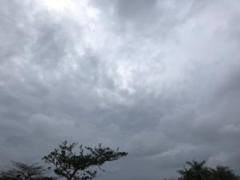

うるがいの話 ある日
最新: ツバキとサザンカの違い【うるがいの話 ある日】とは 一日だけのプログです
『うるがいの話』の最新一日だけのプログで、通信料が少なく経済的だ。カニの画像をクリックすると全ての日付が載る『うるがいの話』サイトを表示します
|
|
【うるがいの話】 うるがい(ｳﾙｶﾞｲ urugai)とは、『もずくがに』の名前でとても大きくなります。 |
|---|---|
|
|
【カミマヤーの話】 猫のことを方言でマヤーといいます。カミマヤー（kamimayaa）とは、神の猫のことです。 |
|
【たながぁの音楽】 たながぁ（ﾀﾅｶﾞｰ tanagaa）とは手長えびのことで、何種類かあり大きいのは車 エビぐらいになります。 |

|
【ぶながぁの話】 ぶながぁ(ﾌﾞﾅｶﾞｰ bunagaa)とは、赤い髪の毛、赤い身体、そして身長は１ｍ２０ｃｍ ぐらい、川の蟹を食べているの目撃された。場所は沖縄県国頭郡大宜味村のと ある村僕の隣近所に住んでいる爺さんから、聞いた話です。 |
|
|
【ギーマの話】 ギーマ(giima)とは、山原の里山に咲くスズランに似た、 花を付けます。実は食べられます、 気が付くと口の周りが紫になっています。 |
2023年02月07日 (火）ツバキとサザンカの違い
16:17

ジョギンギコースのとある民家に椿がある（写真参照）。でもサザンカとも似
ている・・・・、だんだん自信が無くなってきた。家には、表と裏庭にサザン
カを植えて花が咲く。ン～、似ている。で、ネットで調べた、花びらの落ち方
で分かるらしい、でも写真の椿は民家なので多分その確認はできないが。
椿（ツバキ）：花が散る時に、花首から落ちる
山茶花（サザンカ）：花が散る時は、花びらが落ちる
今日、ヨメのお義母さん（９３歳）の通院に私が、付き合うことになった。ヨ
メは介護疲れで持たん！との理由。久々の付き添いだが、杖だけでは歩行に自
信が無いらしく、移動には私が掴まえてあげないといけない。以前より、だい
ぶ弱っている。診察の前に、献血をすることに待合場所で待っていると、お義
母さんの隣にいた付き添にいないバーサンが、従業員に『診察シートを手に持
っていたらダメでしょう、そこの箱に入れないと何時までも待たされますよ！
』と叱られていた。それを聞いていた私は、こんな老人（八十歳は越えている
はず）にそんな口の聞き方は！、とムッときて注意しようかと思たっが抑えた
。お義母さんは、うつがひどく以前からヨメに病院から薬を貰うように勧めて
いたが、薬嫌いなヨメはなかなか貰わなかった。今日は医者にウツがひどいの
で以前貰っていた薬を復活させて下さいと頼み、処方してもらう。お義母さん
には元気になる薬ですよと説明する。次回は２カ月後、どうなることやら。
１６時１２分 ビットコインの総資産 ￥８、７８１（↓６２）